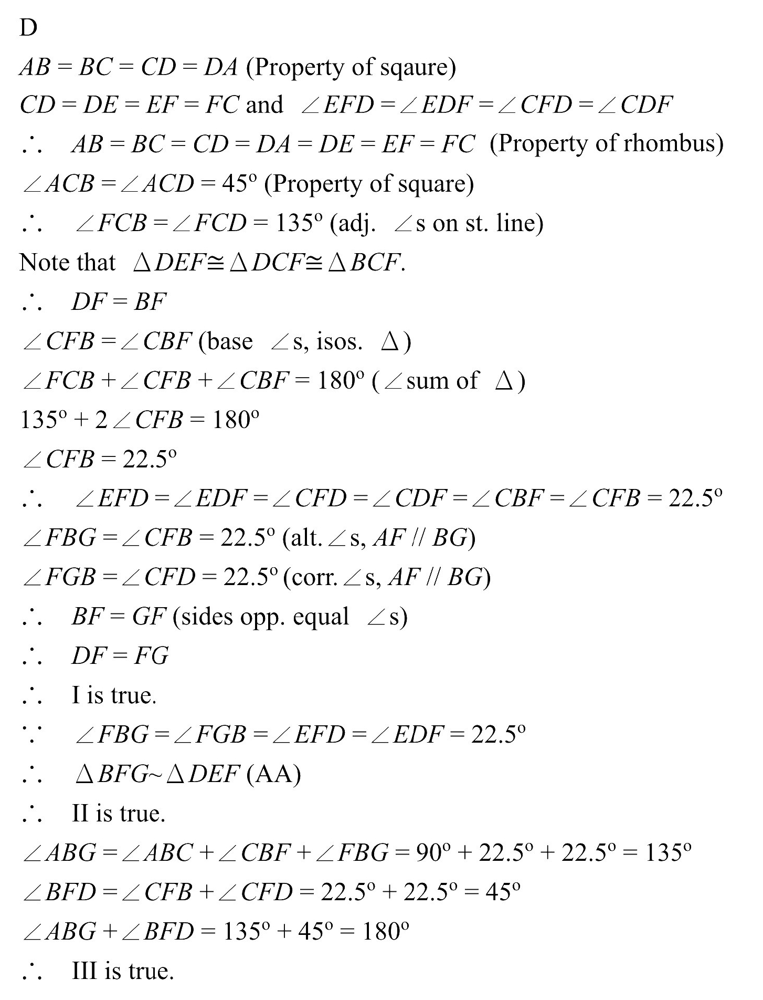

四邊形 · 菱形性質、相似三角形與坐標法

$AC$ 的方向是 $45^\circ$，$F$ 在 $AC$ 延長線上且 $CF=1$，故
$$F=\left(1+\frac{\sqrt2}{2},\ 1+\frac{\sqrt2}{2}\right)$$
由 $DE=CF$ 且 $DE\parallel CF$ 得 $E=D+(F-C)$：
$$E=\left(\frac{\sqrt2}{2},\ 1+\frac{\sqrt2}{2}\right)$$
（可直接驗證 $EF=1$ 且與 $CD$ 平行，故 $CDEF$ 確為菱形。）
直線 $DF$：$D+s(F-D)=\left(s\left(1+\tfrac{\sqrt2}{2}\right),\ 1+s\tfrac{\sqrt2}{2}\right)$。
與 $G=(1+m,m)$ 比較：$1+m=s\left(1+\tfrac{\sqrt2}{2}\right)$，$m=1+s\tfrac{\sqrt2}{2}$。
兩式相減得 $2=s$，故 $G=D+2(F-D)$，即 $F$ 是 $DG$ 的中點。
$$DF=FG\quad\text{（I 正確）}$$
$G=\left(2+\sqrt2,\ 1+\sqrt2\right)$。
菱形邊長：$DE=EF=1$。又
$$DF^2=\left(1+\tfrac{\sqrt2}{2}\right)^2+\left(\tfrac{\sqrt2}{2}\right)^2=2+\sqrt2,\qquad BF^2=\left(\tfrac{\sqrt2}{2}\right)^2+\left(1+\tfrac{\sqrt2}{2}\right)^2=2+\sqrt2$$
故 $BF=DF=\sqrt{2+\sqrt2}$；由第 2 步 $FG=DF=\sqrt{2+\sqrt2}$；而
$$BG=\sqrt{(1+\sqrt2)^2+(1+\sqrt2)^2}=\sqrt2(1+\sqrt2)=2+\sqrt2$$
$$\frac{BF}{DE}=\frac{FG}{EF}=\frac{BG}{DF}=\sqrt{2+\sqrt2}$$
所以 $\triangle BFG\sim\triangle DEF$（II 正確）。
$\angle ABG$：$BA$ 指向左（$180^\circ$），$BG$ 沿 $45^\circ$ 方向，故 $\angle ABG=180^\circ-45^\circ=135^\circ$。
$\angle BFD$：$DB^2=1^2+1^2=2$，$DF^2=BF^2=2+\sqrt2$，
$$\cos\angle BFD=\frac{2(2+\sqrt2)-2}{2(2+\sqrt2)}=\frac{1+\sqrt2}{2+\sqrt2}=\frac{\sqrt2}{2}$$
故 $\angle BFD=45^\circ$，於是 $\angle ABG+\angle BFD=135^\circ+45^\circ=180^\circ$（III 正確）。
三項皆正確，答案 D。